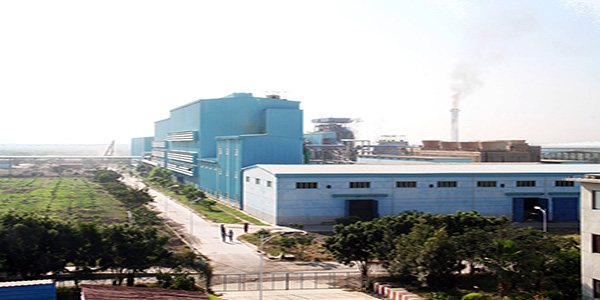
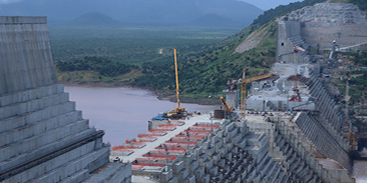
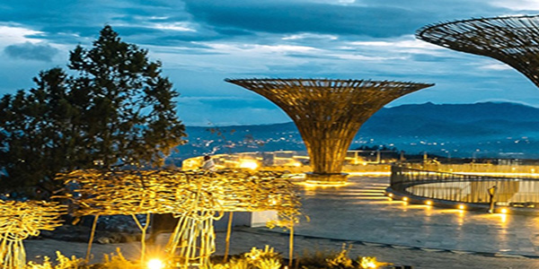
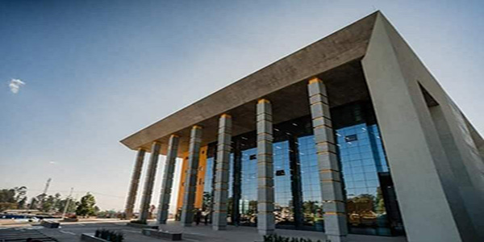

 Sugar Factory The sugar projects had created job opportunities to 65,000 citizens of which 14,500 were in the Omo project. The Omo Kuraz III Sugar Factory, which increased the number of sugar producing factories in Ethiopia and which produces three types of sugar, targets the global market.The project also has the processing capacity of 13,000 tons of sugarcane and 1,500 tons of refined sugar per day. The sugar factory, which will produce 8,000 to 10,000 quintals of sugar per day, will serve as best development corridor for the region.
 GRAND ETHIOPIAN RENAISSANCE DAM The Grand Ethiopian Renaissance Dam (GERD), formerly known as the Millennium Dam, is under construction in the Benishangul-Gumuz region of Ethiopia, on the Blue Nile River, which is located about 40km east of Sudan. The project is owned by Ethiopian Electric Power Corporation (EEPCO). The Grand Ethiopian Dam will facilitaes flood protection in lower areas,irrigation, segment control and navigation. When the projected completed, it will reduce the capacity of the Aswan high Dam, helping to save six billion cubic meters of whater.The dam will also serve as abridge across the Blue Nile, Image courtesty of Kenneth Frsntz
 ENTOTO PARK The multi-purpose park contains indoor and outdoor facilities built mostly with local materials, including centers for physical activities, a library, restaurants and coffee shops, fountains, walkways and bicycle and scooter lanes. The new park hugging the country's capital had created 10,000 new jobs.
 GRAND LIBRARY IN ADISS ABABA The building of Abrhot Library has cost the country 1.1 billion Birr. It is built on 19,000 square meters of land near the national palace. With 1.5 kilometers shelf length, Abrhot can contain 1.4 million books, 250,000 soft copy books, and 300,000 research papers.The compound has parking space for 115 vehicles, a meeting hall, amphitheater, shops, café and reading and playing areas for kids